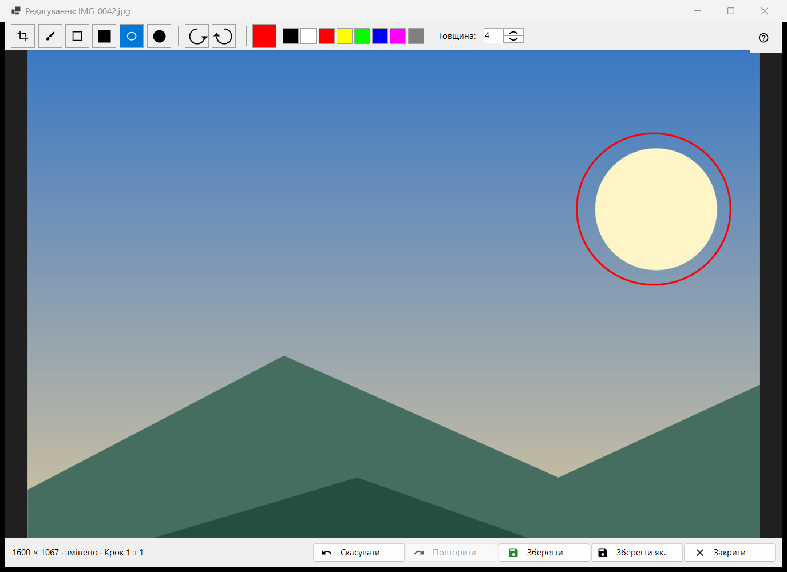
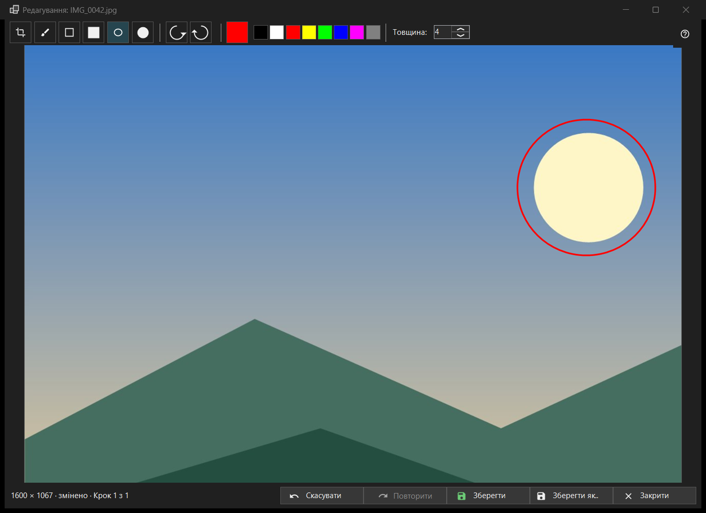

Редагування зображення
Призначення
Невеликий редактор для однієї нерухомої картинки: малювання фігур, обрізання, поворот і відображення, потім збереження поверх оригіналу або в новий файл. Відкривається кнопкою «Редагувати» на панелі інструментів або першим пунктом меню картинки, у заголовку - ім’я файлу («Редагування: ..»), і лише для нерухомого зображення (не для анімації). Редактор заново читає файл і працює зі своєю копією.


Порядок дій
- Натисніть «Редагувати» в переглядачі.
- Виберіть інструмент, колір і товщину.
- Малюйте на картинці або обріжте, поверніть, відобразіть її; «Скасувати» повертає на крок.
- Натисніть «Зберегти», щоб записати поверх оригіналу, або «Зберегти як..» для нового файлу.
- Закрийте вікно; за незбережених правок дайте відповідь на питання.
Елементи вікна
Інструменти
У смузі: «Обрізання», «Пензель», «Прямокутник», «Залитий прямокутник», «Овал» і «Залитий овал». Клавіші C, B, R та O (у залитих клавіш немає). Утримуйте Shift під час малювання прямокутника чи овала, щоб вийшов квадрат або коло. Підказка інструмента показує його назву й клавішу.
Колір і товщина
Кнопка «Вибрати колір» відкриває діалог кольору, поруч - вісім кнопок «Швидкий вибір кольору» (чорний, білий, червоний, жовтий, лайм, синій, пурпуровий, сірий). «Товщина:» від 1 до 64 пікселів зображення (типово 4); клавіші [ та ] змінюють її на одиницю. Колір і товщина спільні для всіх інструментів.
Обрізання
Інструментом «Обрізання» протягніть рамку на картинці. Кнопка «Застосувати обрізання» з’являється лише доки рамка є. Enter робить те саме; Esc прибирає рамку без обрізання. Картинку обрізано лише тоді, коли ви застосували рамку.
Поворот і відображення
«Повернути ліворуч» (Ctrl+[) і «Повернути праворуч» (Ctrl+]) повертають пікселі. Клавіші H та V відображають картинку по горизонталі й по вертикалі. Це змінює саму картинку, на відміну від клавіші R у переглядачі, що повертає лише показ.
«Скасувати» і «Повторити»
«Скасувати» (Ctrl+Z) і «Повторити» (Ctrl+Y або Ctrl+Shift+Z) ходять історією до 20 кроків у межах ліміту пам’яті. Рядок стану показує розмір, а після правки - «змінено» та «Крок N з M»; коли ліміт відкидає найстаріші кроки, він пише «Старі кроки відкинуто: ліміт пам'яті».
«Зберегти»
«Зберегти» (Ctrl+S) записує поверх оригіналу й вмикається лише після правки; до неї підказка кнопки: «Нічого зберігати: зображення не змінено». Для JPEG один раз за сеанс запитають: «JPEG буде перестиснуто - це незворотно. Дата зйомки та решта EXIF-даних збережуться. Продовжити?» Файл пишеться під тимчасовим ім’ям і підміняє оригінал; якщо зберегти не вдалося, вікно лишається відкритим із причиною.
«Зберегти як..»
Відкриває діалог файлу з ім’ям, до якого додано «(ред.)». Формати: PNG, JPEG, BMP, TIFF і WebP; картинці в будь-якому іншому форматі пропонується PNG. Тимчасову теку архіву не приймає. Після запису поверх оригіналу переглядач перечитує файл; новий файл у тій самій теці відкривається; файл в іншому місці названо в рядку стану.
Коли «Зберегти» вимкнено
Рядок стану пише «Поверх оригіналу не можна» і причину: цей формат не записується, файл лише для читання, немає прав на запис, файл зайнятий іншою програмою, у файлі кілька сторінок або кадрів (редагується лише перший), це файл усередині архіву або файл не знайдено. «Зберегти як..» лишається доступним.
Закриття
«Закрити» або Esc закриває вікно; Esc спершу скасовує штрих, що триває, потім прибирає рамку обрізання. За незбережених правок питання таке: «Правки не збережено» - «Закрити редактор і втратити незбережені правки?» «Зберегти» спершу зберігає, «Не зберігати» відкидає, «Скасувати» (за умовчанням, воно ж Esc) лишає вікно. Це питання ставиться й за вимкнених підтверджень.